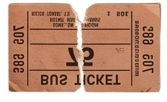
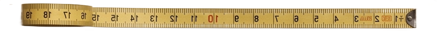
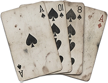
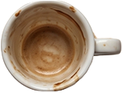
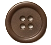
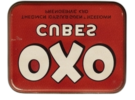
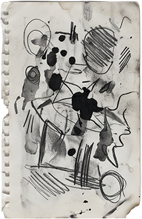
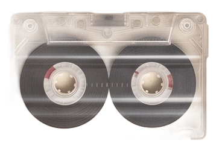

Kaleidoscope
let symmetry = 8;
let angle = 360 / symmetry;
if (mouseIsPressed) {
translate(width / 2, height / 2);
let mx = mouseX - width / 2;
let my = mouseY - height / 2;
let pmx = pmouseX - width / 2;
let pmy = pmouseY - height / 2;
for (let i = 0; i < symmetry; i++) {
rotate(angle);
// Stroke weight from speed
let d = dist(mx, my, pmx, pmy);
let sw = map(d, 0, 15,
6, 1.5, true);
strokeWeight(sw);
// Draw regular segment
line(mx, my, pmx, pmy);
// Draw mirrored segment
push();
scale(1, -1);
line(mx, my, pmx, pmy);
pop();
}
}

Un outil de dessin kaléidoscopique avec 8 axes de symétrie. En maintenant le clic et en déplaçant la souris, des traits sont dessinés et répliqués symétriquement.
L'origine est déplacée au centre du canvas avec translate(). Ensuite, une boucle for fait 8 rotations de 45° chacune (360 / 8).
À chaque rotation, on dessine le trait normal puis un trait miroir avec scale(1, -1) — ce qui double le nombre de segments à 16 au total.
L'épaisseur du trait varie selon la vitesse du mouvement : un geste lent produit un trait épais (6px), un geste rapide un trait fin (1.5px).
Appuie sur « C » pour effacer le canvas et recommencer.